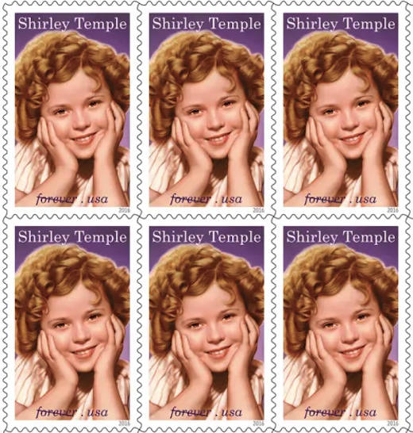

| Actresses and Actors on Stamps | ||||||
|---|---|---|---|---|---|---|
| Movie Star | Years Active | Known For | Place of Birth | Date of Birth | Date Passed | Place of Passing |
| 1948 to 1993 | Ixelles, Brussels, Belgium | |||||
| 1941 to 2003 | The Ten Commandments | |||||
| 1925 to 1961 | ||||||
| 1932 to 1982 | 29 Aug 1915 | 29 Aug 1982 | ||||
| 1932 to 1991 | ||||||
| 1924 to 1969 | Grand Rapids, Minnesota | 10 Jun 1922 | 22 Jun 1969 | |||
| 1828 to 1995 | 12 May 1907 | 29 Jun 2003 | Old Saybrook, Connecticut | |||
|  | 1932 to 1992 | 23 Apr 1928 | 10 Feb 2014 | |||